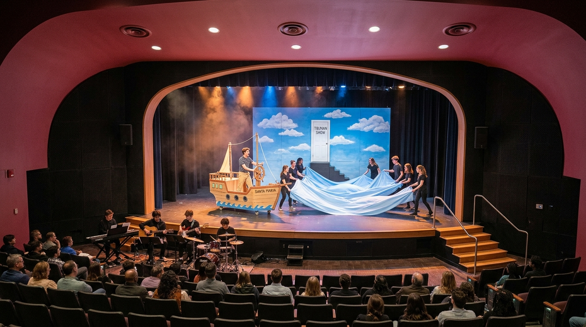

מפת האולם האמיתי ופינת הכלים המצומצמת
תרשים מדויק המשלב את תמונת האולם האמיתי שלכם (התקרה המעוגלת, פתח הבמה המעוצב והמדרגות עם מעקה המתכת מימין) עם פתרון פשוט לפינת הנגנים.
עליו תולים בסיכות ביטחון סדין שמיים תכול מצויר ודלת קרטון בסצנת הסיום בלבד
אביזרי קרטון קלים נכנסים ויוצאים ברגע • שימוש בספוטים המותקנים בתקרה
פינת הכלים הקומפקטית והמצומצמת
פתרון חסכוני במקוםאיך מכניסים פסנתר, גיטרות ותופים באולם הזה?
- על רצפת האולם משמאל: בתמונת האולם רואים בבירור שהמדרגות היורדות לאולם נמצאות בצד ימין. לכן, המקום המושלם לתזמורת הוא **על רצפת האולם משמאל לבמה**, ממש מתחת למפלס השחקנים!
- לא חוסמים את הבמה: שטח הבמה נשאר 100% נקי לחלוטין עבור שחקני י״ב.
- קלידים חשמליים במקום פסנתר כבד: פסנתר חשמלי על סטנד X פשוט תופס רק 1.2 מטר רוחב.
- קחון (Cajon) במקום מערכת תופים ענקית: מתופף יושב על קחון אקוסטי ומצילה אחת – חוסך 80% שטח ונותן סאונד אקוסטי מדהים לאולם.
השוואה משולשת: הסקיצה הידנית ⬅️ תמונת האולם האמיתי ⬅️ הדמיית המופע של טרומן

הסימון האדום מאחור מייצג את הוילון השחור, המעברים הצרים בצדדים, והמדרגות מימין.

האולם שלכם: מעטפת במה שחורה עם וילונות שחורים, מדרגות עם מעקה מתכת מימין, ומושבים מדורגים.

איך המופע ייראה באולם שלכם: סירת קרטון על גלגלים, גלי סדינים תכולים, דלת שמיים על הוילון השחור, ותזמורת בשמאל.
גלריית הדמיות ה-DIY באולם שלכם
תמונות ריאליסטיות המראות בדיוק כיצד תיראה ההצגה באולם המדויק שלכם עם תפאורת קרטון ובדים. לחצו על כל תמונה להגדלה.
1. המופע של טרומן באולם שלכם
שילוב מלא של האולם האמיתי (התקרה המעוגלת, מעטפת הבמה השחורה והמדרגות מימין) עם סירת הקרטון, גלי הסדינים ופינת הנגנים בשמאל.
 2. הבמה השחורה הריקה
2. הבמה השחורה הריקה
2. הבמה השחורה הריקה ופינת הנגנים
במה נקייה לחלוטין עם וילון שחור מאחור, מדרגות ימינה לאולם, ופינת כלי נגינה קומפקטית ומצומצמת מאוד באגף שמאל על הרצפה.
 3. הבית והמראה מקרטון
3. הבית והמראה מקרטון
3. חדר השינה והעיירה מקרטון
חזית בית צהובה מקרטון מקרר ממוחזר, מסגרת עץ ריקה שטרומן מצחצח שיניים דרכה מול הקהל, וענני קרטון תלויים על חוט דיג.
 4. שיא ההצגה ב-DIY
4. שיא ההצגה ב-DIY
4. סירת הקרטון וקיר השמיים
סירה עשויה מקרטון צבוע על כיסא משרדי ישן עם גלגלים! שני תלמידים מניפים סדינים לגלים, ודלת קרטון על סדין שמיים תלוי על הוילון.
מדריך הכנה עצמית מהירה (DIY) באפס תקציב
איך מכינים את כל התפאורה ל"המופע של טרומן" תוך כמה ימי עבודה בבית ספר מחומרים זמינים וחינמיים לחלוטין.
1. סירת המפרש "סנטה מריה" ב-0 שקלים
איך מכינים תוך שעתיים:
- הבסיס: לוקחים כיסא משרדי מסתובב על גלגלים מחדר מורים או משטח עץ עם 4 גלגלים.
- הדפנות: לוקחים קרטון מקרר ענק (מבקשים חינם מחנות מוצרי חשמל), חותכים בסכין יפנית צורת חרטום סירה משני הצדדים וצובעים בצבע לבן/חום.
- המפרש: מקל מטאטא קשור מאחור עם בד לבן/קרטון משולש. טרומן יושב על הכיסא, מניע את עצמו עם הרגליים או נמשך ע"י חוט נסתר!
2. גלי הים של הסערה מסדינים מהבית
איך מכינים ללא שום עלות:
- מביאים מהבית 2-3 סדינים ישנים בצבע כחול, טורקיז או תכלת.
- שני תלמידים לבושים שחור עומדים משני צדי הבמה ומחזיקים את קצוות הסדין.
- בשיט הרגוע: מניעים בעדינות למעלה ולמטה – מראה יפהפה ופיוטי.
- בסערה: מנערים בחוזקה, מתופף התזמורת נותן רול על המצילה, והתאורן מהבהב בספוט (ברקים).
3. קיר השמיים והדלת על הוילון השחור
הפתרון הכי גאוני לסצנת הסיום:
- לא בונים קיר מעץ! לוקחים סדין תכלת או 2 קרטוני ענק מחוברים, צובעים עליהם עננים לבנים רכים בספוג.
- מחברים את הסדין/קרטון ישירות לוילון השחור האחורי של האולם עם סיכות ביטחון גדולות.
- דלת היציאה: חותכים בקרטון פתח דלת פשוטה (רוחב 70 ס"מ, גובה 1.80 מ') שנפתחת כמו חלון.
- המדרגות: מניחים שרפרף עץ פשוט של כיתה לפני הדלת. כשדלת נפתחת – מאחוריה יש את החושך של הוילון השחור!
4. מראת חדר השינה ללא זכוכית
פתרון אנתרופוסופי פשוט ומושלם:
- לוקחים מסגרת תמונה ריקה מעץ (אפשר ישנה מהבית או לחבר 4 קרשים פשוטים).
- מחברים אותה לבסיס עץ קטן כך שהיא עומדת בגובה הפנים של טרומן.
- טרומן עומד מאחורי המסגרת הריקה ומצחצח שיניים מול הקהל – הקהל הוא המראה שלו!
- עובי המתקן: 3 ס"מ בלבד! שחקן מרים אותו ביד אחת ומפנה לקלעים בתוך שתי שניות.
5. נפילת הפנס מהשמיים (תמונה 1)
איך עושים בלי לסכן אף אחד:
- לוקחים קופסת נעליים או בקבוק פלסטיק עטוף באיזולירבנד שחור ונייר כסף.
- קושרים חוט דיג שקוף שעובר דרך מוט התאורה בתקרה אל מעבר הקלעים.
- ברגע הנכון, איש צוות משחרר את החוט – הפנס "מתרסק" על הבמה השחורה ליד טרומן, ומתופף התזמורת נותן מכת מצילתיים חדה (Crash) שנשמעת כמו התרסקות אמיתית.
6. סצנת המכונית והכור הגרעיני
בלי מכונית אמיתית:
- שני כיסאות תלמידים רגילים עומדים זה לצד זה בקדמת הבמה.
- טרומן מחזיק צלחת פריסבי או חישוק קטן כהגה ולוחץ על "דוושה" דמיונית. מריל יושבת לצידו מבוהלת.
- שני שחקנים מאחור מנערים קלות את הכיסאות ליצירת תחושת נסיעה מהירה.
- בכור הגרעיני: שני שחקנים בסרבלי נייר לבנים של צבעים (10 ש"ח בטמבור) ומסכות אבק עומדים עם שלט צהוב.
סצנוגרפיה מותאמת DIY ל-14 תמונות המחזה
איך מציגים כל תמונה ותמונה מהמחזה שלכם בעזרת אביזרי קרטון פשוטים שיוצאים ונכנסים תוך 5 שניות.
הבוקר של טרומן, המראה ונפילת הפנס
✂️ תפאורת DIY מהירה
- מיטה: מזרן פשוט של בית ספר מונח על 2 ארגזים.
- מראה: מסגרת תמונה ריקה ללא זכוכית על רגלית.
- פנס נופל: קופסת נעליים צבועה בשחור על חוט דיג.
🚪 פינוי הבמה השחורה
מריל מעירה את טרומן. ברגע שטרומן יוצא "לרחוב", שני תלמידים מרימים את המזרן והמסגרת ומחליקים איתם לקלעים.
🎶 התזמורת בפינה
נעימת פתיחה עליזה בקלידים ובגיטרה אקוסטית. ברגע נפילת הפנס: מכת סנר/מצילה חדה ודממה פתאומית!
משרד הביטוח ומזח המעבורת להארבור איילנד
✂️ תפאורת DIY מהירה
- משרד: שולחן תלמיד אחד, טלפון ישן מהבית, קלסר ודפים.
- שלט מעבורת: חתיכת קרטון מחוברת למקל מטאטא "מעבורת להארבור איילנד".
- מים: חבל פשוט שטרומן עומד לפניו ופוחד לדרוך.
🚪 פינוי הבמה השחורה
טרומן רק עושה 4 צעדים מקדמת הבמה אל המדרגות הימניות. האולם החשוך מייצג את המים הפתוחים.
🎶 התזמורת בפינה
צליל גיטרה קופצני במשרד, שהופך למקצב תופים מהוסס וצלילי פעמונים בקלידים כשנזכר בטראומה.
השיחה עם מרלון על הגשר הלא-גמור בלילה
✂️ תפאורת DIY מהירה
- אפס תפאורה! רק שרפרף עץ או 2 ארגזי פלסטיק הפוכים שעליהם הם יושבים.
- שישיית פחיות בירה ריקות וכדור קטן.
🚪 פינוי הבמה השחורה
כל הבמה חשוכה! רק ספוט אחד חם מאיר עליהם במרכז הבמה. הוילון השחור נבלע בחושך.
🎶 התזמורת בפינה
נגינת פסנתר/קלידים עדינה ונוגעת ללב, שקטה ואינטימית מאוד.
פלאשבק: נשף התיכון והחוף עם סילביה (לורן)
✂️ תפאורת DIY מהירה
- סוודר אדום: סוודר צמר אדום בולט וסיכה עגולה מקרטון "איך זה ייגמר?".
- מכונית האב החוטף: שני שחקנים יוצאים מהקלעים עם פנסי אופניים חזקים ישירות לעיני הקהל וצופרים בצפצפה!
🚪 פינוי הבמה השחורה
שום מבנה פיזי! האור המסנוור של שני הפנסים מספיק כדי לשכנע את הקהל שהגיעה מכונית חורקת.
🎶 התזמורת בפינה
שיר שקט בגיטרה וקלידים, ואז מכת תופים חדה ורועמת בעצירת ה"מכונית" וחטיפת סילביה.
הסערה בים בסירה "סנטה מריה" ודלת היציאה מהעולם
✂️ תפאורת DIY מהירה
- סירת קרטון על כיסא משרדי: מתגלגלת בקלות פנימה ממעבר ימין.
- גלי סדינים תכולים: שני תלמידים מנופפים בסדינים.
- קיר שמיים ודלת: סדין תכלת עם עננים ודלת קרטון תלוי על הוילון השחור, שרפרף עץ לפניו.
🚪 המהלך הדרמטי
טרומן "מפליג" בסירה. הסירה פוגעת בקיר הסדין/קרטון בצליל "בום". טרומן יורד, עולה על השרפרף, פותח את דלת הקרטון, אומר "בוקר טוב, צהריים טובים ולילה טוב!" ויוצא אל מאחורי הוילון השחור!
🎶 התזמורת בשיא
התופים בסערה אדירה ורועמת יחד עם הגיטרות! בסיום: שקט מוחלט, ורק נגינת פסנתר שברירית בפרידה.
צ'ק-ליסט איסוף והכנה עצמית (DIY)
רשימת הפריטים מתוך המחזה (עמ' 40-44) עם פירוט מאיפה משיגים בחינם ואיך מכינים.
| V | פריט / רקוויזיט | תמונה במחזה | איך מכינים בחינם / מאיפה מביאים | סטטוס |
|---|